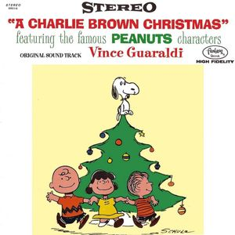

-

Faces is a deeply introspective mixtape that showcases Mac Miller's exploration of themes like addiction, depression, and self-reflection. The project features experimental production and raw, vulnerable lyrics, illustrating his struggles and creative freedom. It is both critically acclaimed and beloved by fans, highlighting Miller's artistry and emotional depth.
-

The 10th Anniversary Edition of Watching Movies with the Sound Off celebrates Mac Miller’s shift toward a more experimental sound. This album highlights his journey through self-discovery and existential themes, marked by rich, layered production and thought-provoking lyrics. It reaffirms Miller's ability to fuse introspection with musical experimentation.
-

Illmatic is widely regarded as a seminal album in hip-hop, known for its lyrical depth and vivid storytelling. Nas's debut features intricate rhymes and a fusion of jazz and boom-bap beats, capturing the essence of life in Queensbridge, New York. Its influence on the genre is profound, establishing Nas as one of the leading voices in hip-hop.
-
Late Registration showcases Kanye West's innovative production and introspective lyrics, blending orchestral sounds with hip-hop. The album addresses themes of fame, race, and personal struggle, featuring hits like “Gold Digger” and “Touch the Sky.” It solidified Kanye's status as a groundbreaking artist and continues to resonate in contemporary music.
-

The soundtrack for A Charlie Brown Christmas is a timeless jazz classic that perfectly encapsulates the holiday spirit. Composed by Vince Guaraldi, the album features memorable tracks like “Linus and Lucy” and “Christmas Time Is Here,” blending soothing melodies with nostalgic charm. Its enduring popularity makes it a staple during the holiday season.